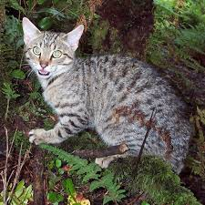
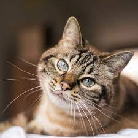
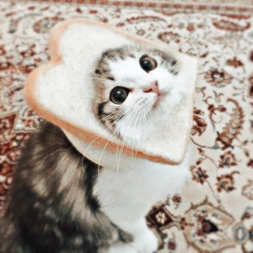
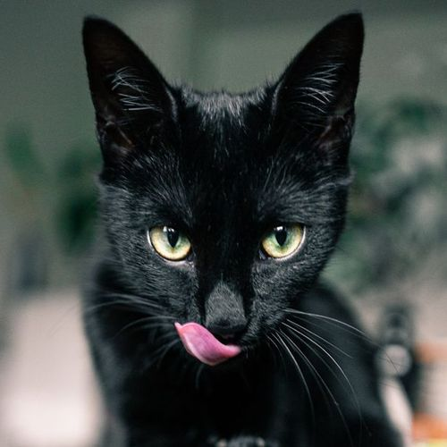

Look at how cute this cat is! This cat is very sleepy and had a long day of exercise. Now this cat is doing a photoshoot. This cat has traveled across the seven realms of the norse universe and has lots of experience in sleeping in different areas. This cat has taken naps in the peaks of Jotenheim, and Muspelheim itsself! Amazing! If you see this cat on your journeys, be sure to say hi!!!
BOO! This Cat is searching for something! What could this cat be searching for tho? Treasure? The Apple of Eden? I find myself very curious. This cat is lurking in a jungle, so maybe the cat is searching for some ancient mayan ruins!!! Nonetheless it's such a cuuuuute cat!! However be warned, this cat does not like to be sneaked up upon, so give em a warning before you scare mr cat away.
Ah yes, the majestic magnificent cat. This cat is as pure hearted as they come, very kind to the other cats and helpful to those who surround them. This cat's favorite hobbies is tennis, chess, and drinking tea. Don't be scared! The magnificent cat will be there to comfort you. This cat also likes to listen to calming, classical songs often times. So come on over to the magnificent cat's house and relax!
Oh nooo!!! This cat got their head stuck inside the bread while examining it! Haha just kidding, this cat is playing dress up and thought that a piece of bread would be a great costume. This cat is a little more adolscent then the other cats and often finds these fun pasttimes to indulge in.
Ah yes the intellectual cat. This cat is very wise, they actually got placed in the Ravenclaw household on an online harry potter quiz. This cat is as intellectual as they get having a college GPA of 6.0. I know.. you can't even get that high, that's why its amazing. The Intellectual Cat is very kind to others, and definitley a great friend to be with.
Oh no!! Someone feed this cat. The black cat is a little angry because they haven't been fed their fancy feast. If I were you my best advice is to take a trip to your local stop & shop and get this cat some food. If not they may try to breach the kitchen and take food from the fridge. Mmm some nice fish would do pretty nice for the cat right now!